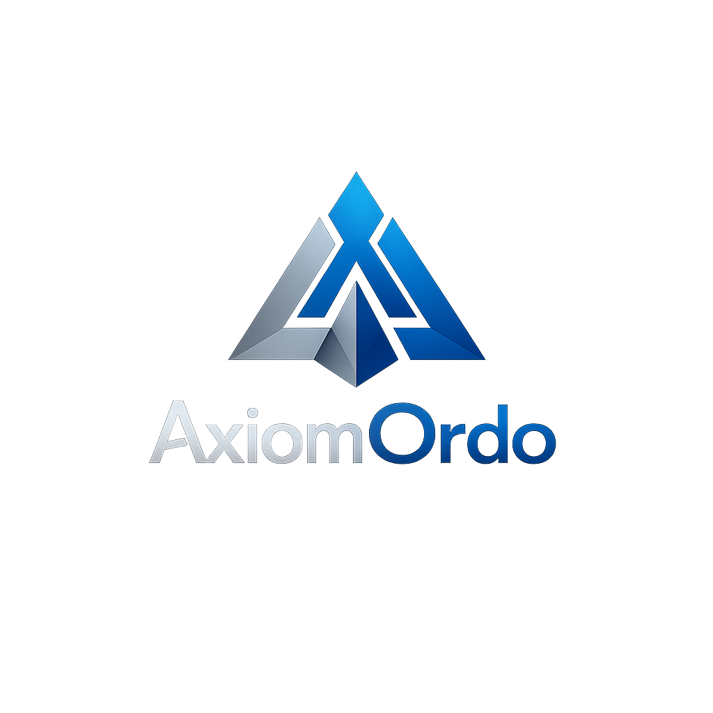

Deterministic, audit-defensible PFAS decisions built on evidence, not assumptions.
Request PFAS Exposure SnapshotEU PFHxA Restrictions Begin
Loading...
From October 2026, PFHxA restrictions apply to consumer clothing, footwear,
and certain food-contact paper and cardboard in the EU.
If you cannot demonstrate compliance, market access risk becomes immediate.
Restrictions Expand Further
Loading...
From October 2027, the restriction extends to additional general-public textile
applications beyond the first 2026 categories.
The scope increases, but most organisations are already behind today.
Most companies are not non-compliant. They are unable to prove compliance. That is where regulatory and commercial risk begins.
We do not guess. We do not rely on vague supplier claims.
Traditional compliance relies on interpretation. AxiomOrdo produces defensible outputs with traceable evidence.
From first visibility to an evidence-backed position under scrutiny.
The cost of proving your position is usually far lower than the cost of getting it wrong.
Know your PFAS position
€9.5K
Deterministic screening of up to 20 products, with evidence gaps, highest-risk items, and immediate next actions.
Best for:
Understanding your PFAS position for the first time
Control your PFAS risk
€18.5K
Turn your PFAS position into a full portfolio action plan with supplier engagement and clear priorities.
Best for:
Taking control of PFAS risk across your portfolio
Defend your PFAS stance
€35K
Build an audit-grade, evidence-backed position for regulatory review, client challenge, and internal sign-off.
Best for:
Audit, regulatory review, and internal sign-off
€5K–€12K / month
Stay ahead with monthly updates, supplier follow-up tracking, and a current view of what changed and what still needs action.
Best for:
Companies with ongoing product exposure
Teams managing supplier evidence over time
Maintaining a defensible position, not just assessing it once
Typical path:
Most clients start with Exposure Snapshot, then move to Monitoring for ongoing control.
Designed for organisations operating under regulatory scrutiny, where decisions must be defensible, not just documented.
Send a brief overview of your product scope and current data position. We will confirm feasibility within 24 hours.
Request PFAS Exposure Snapshot